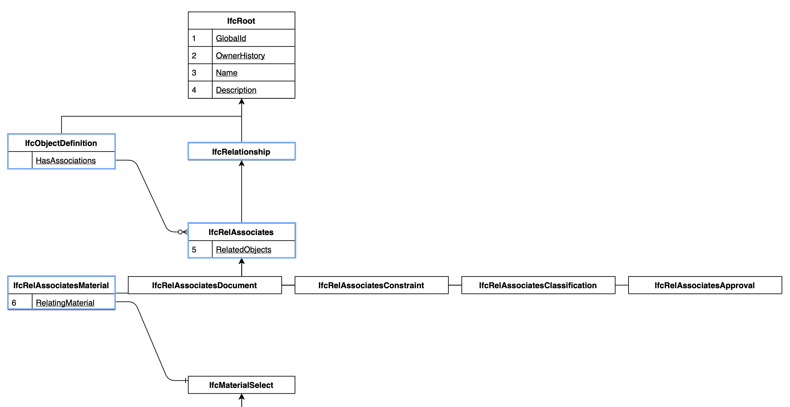
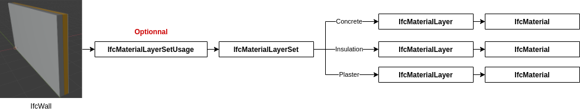
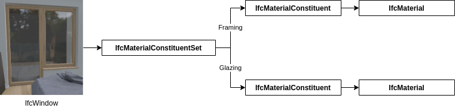
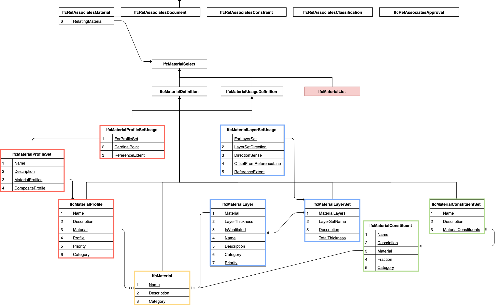
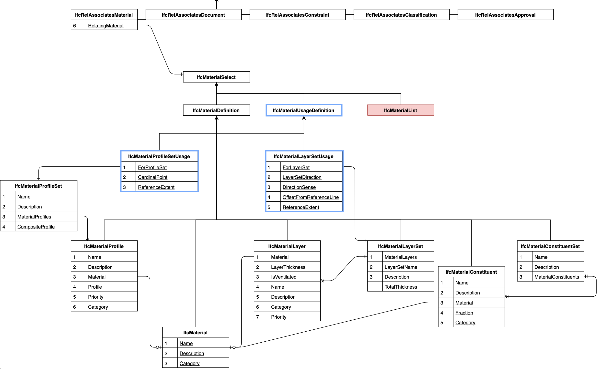

F23 - 41927
Materialer i IFC og Blender BIM
Martina Jakubowska
Mere info om materialer i IFC kan findes herMaterialer i IFC er non-rooted
IfcRoot definerer fire attributer
| Attribute | Required | Description |
| GlobalId | Yes | A unique identifier of the object, generated by a computer. This is usually created automatically by the BIM authoring tool. |
| OwnerHistory | This special attribute can store names, dates, organisations, software vendor, and contact details of people who are responsible for this object. This is usually created automatically by the BIM authoring tool. | |
| Name | This can contain a short text that names the object. | |
| Description | A sentence or so to describe the object. |
Materialer i IFC er non-rooted
➡ Er ikke IfcObjects
➡ Har ikke en GUID
➡ Er ikke projekt-specifikke
➡ Kan deles mellem projekter
Materialer i IFC er non-rooted
Et IfcObject kan enten få tildelt:
➡ Et enkelt materiale (Single material, direct assignment)
➡ Et materialesæt (Material set)
Single material

Tre slags materialesæt
➡ Lag sæt:Material layer set (each material within this represents a single layer)
➡ Komponent sæt: Material constituent set (each material within this represents a single constituent)
➡ Profil sæt: Material profile set (each material within this represents a single profile)
Material Layer Set
Material Constituent Set
Material Profile Set

Tildeling af materialer
IfcMaterialUsageDefinition
IfcMaterialUsageDefinition
The IfcMaterialLayerSetUsage determines the usage of IfcMaterialLayerSet in terms of its location and orientation relative to the associated element geometry.
Material PropertySets
| Property Set | Description |
| Pset_MaterialCombustion | Used to store chemical properties of combustible materials. |
| Pset_MaterialCommon | Generic material properties. |
| Pset_MaterialEnergy | A set of extended material properties for energy calculation purposes. |
| Pset_MaterialFuel | A set of extended material properties of fuel energy typically used within the context of building services and flow distribution systems. |
| Pset_MaterialHygroscopic | A set of hygroscopic properties of materials. |
| Pset_MaterialMechanical | Useful for describing mechanical properties, usually relevant to structural analysis. |
| Pset_MaterialOptical | A set of optical properties of materials. |
| Pset_MaterialThermal | A set of thermal material properties. |
| Pset_MaterialWater | A set of extended material properties for of water typically used within the context of building services and flow distribution systems. |
I BlenderBIM:
❏ Single Material
❏ Material categories (& material manager)
❏ Material property sets
❏ IFC Style
❏ Material Sets: Layer, Profile and Constituent
❏ Usage: Layer Usage, Profile Usage